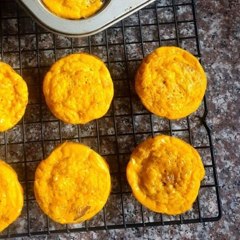

Meat balls
Ingredients
- 2 pounds ground Meat
- 8 ounces mozzarella cheese whole milk
- 1 pinch salt
Recipe
- STEP 1
Preheat the oven to 350°F
Mix the salt and meat in a bowl. - STEP 2
Cut the cheese into 8 cubes.
Divide the meat into 8 4-ounce balls.
Make a well in the center of each ball
and insert the cheese. Press the meat around
to cover the hole and smooth over any lumps. - STEP 3
Arrange meatballs in a 9×13-inch
glass baking dish.Bake for 25 minutes
until cooked. Cool slightly and serve warm.
Breakfast Muffins
Ingredients
- 9 large eggs
- 8 ounces ground meet
- 1 teaspoon salt
Recipe
- Preheat the oven to 350°F
Lightly grease a standard size muffin tin.
Brown the meat in a skillet over medium heat. - Whisk eggs in a large bowl.
Add meat and salt. Stir to combine.
Divide the mixture evenly into the muffin tins.
Fill each well ¾ full.
Bake for 20 minutes until eggs set. - Remove from oven and cool for 5 minutes.
Release by running a knife around
the edge of each muffin. Pop out
and continue cooling on a wire rack or serve.

Baked Salmon
Ingredients
- 4 skinless salmon fillets
- 1 tbsp olive oil or melted butter
- chopped herbs, lemon slices and
steamed long-stem broccoli, to serve
Recipe
- Heat the oven to 180C/160C fan/gas 4.
Brush each salmon fillet with the oil
or butter and season well. - Put the salmon fillets in an ovenproof dish.
Cover if you prefer your salmon to be tender,
or leave uncovered if you want the flesh to roast slightly. - Roast until just opaque and easily
flaked with a fork. Serve with a sprinkling of
chopped herbs, lemon slices and
steamed long-stem broccoli, if you like.